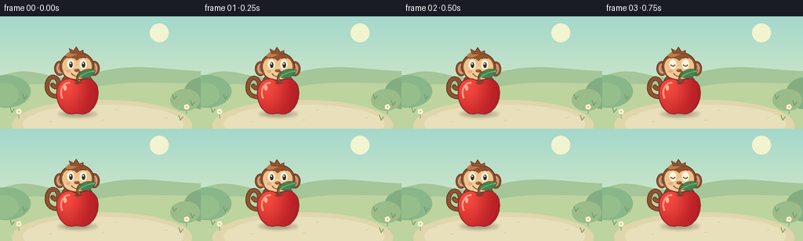
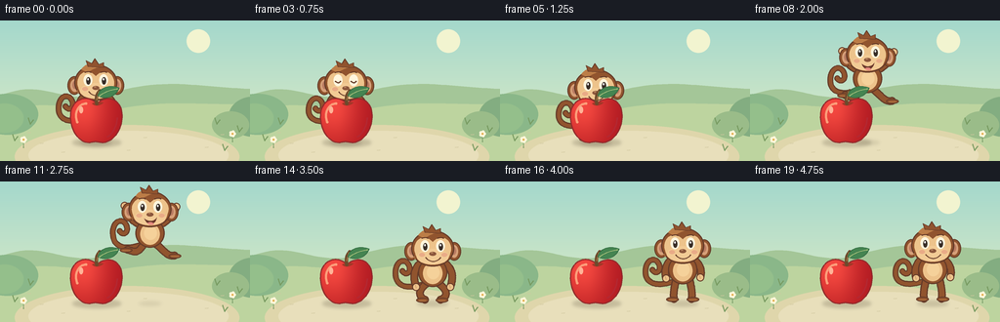

CODING AGENTS AS PIXEL WORLD MODELS
traex/GPT-6.1-Sol · dynamic_spatial_relationship_0052
点击播放 · 原生 RGB 像素
逐轮保存的候选
回放视频、检查图与代码变化。
每份候选均可单独播放。实际图片检查记录在下方工具轨迹中。
候选 01播放与检查图
点击播放 · 原生 RGB 像素


展开代码变化
--- 上一保存版本
+++ 本次保存版本
@@ -0,0 +1,195 @@
+from pathlib import Path
+import math
+import numpy as np
+from PIL import Image, ImageDraw, ImageFilter
+import artifact_io
+
+ROOT = Path(__file__).resolve().parent
+W,H,S = 256,144,4
+
+def bezier(points, steps=24):
+ result=[]
+ p=points[0]; result.append(p)
+ for segment in points[1:]:
+ if len(segment)==2:
+ p=segment; result.append(p)
+ else:
+ a,b,c=segment
+ for i in range(1,steps+1):
+ t=i/steps; u=1-t
+ result.append((u**3*p[0]+3*u*u*t*a[0]+3*u*t*t*b[0]+t**3*c[0],u**3*p[1]+3*u*u*t*a[1]+3*u*t*t*b[1]+t**3*c[1]))
+ p=c
+ return result
+
+class Painter:
+ def __init__(self,img): self.img=img; self.d=ImageDraw.Draw(img)
+ def ellipse(self,box,fill,outline=None,width=1):
+ self.d.ellipse(tuple(round(v*S) for v in box),fill,outline,width=round(width*S))
+ def path(self,points,fill,outline=None,width=1):
+ ps=bezier(points); xy=[(round(x*S),round(y*S)) for x,y in ps]
+ if fill: self.d.polygon(xy,fill)
+ if outline: self.d.line(xy+[xy[0]],fill=outline,width=round(width*S),joint='curve')
+ def line(self,pts,fill,width=1):
+ xy=[(round(x*S),round(y*S)) for x,y in bezier(pts)]
+ self.d.line(xy,fill=fill,width=round(width*S),joint='curve')
+ r=width/2
+ self.ellipse((pts[0][0]-r,pts[0][1]-r,pts[0][0]+r,pts[0][1]+r),fill)
+ p=bezier(pts)[-1]; self.ellipse((p[0]-r,p[1]-r,p[0]+r,p[1]+r),fill)
+
+def background():
+ yy=np.arange(H*S)[:,None,None]/(H*S)
+ top=np.array([164,216,204]); bot=np.array([230,238,197])
+ arr=np.repeat((top*(1-yy)+bot*yy).astype(np.uint8),W*S,axis=1)
+ img=Image.fromarray(arr,'RGB'); p=Painter(img)
+ p.ellipse((191,9,215,33),(242,244,208))
+ p.path([(0,77),((46,58),(61,87),(109,76)),((164,57),(204,68),(256,70)),(256,144),(0,144)],'#a4c698')
+ p.path([(0,91),((43,83),(74,88),(111,93)),((164,79),(216,88),(256,85)),(256,144),(0,144)],'#bdd49f')
+ p.ellipse((-24,75,39,117),'#8ab789');p.ellipse((-15,85,24,115),'#94bf8b')
+ p.ellipse((234,78,284,119),'#83ad81');p.ellipse((217,93,255,121),'#9abc89')
+ p.ellipse((15,107,245,172),'#dfd6ab')
+ p.ellipse((29,113,234,163),'#e8dfbb')
+ # quiet ground marks
+ for x,y in [(41,126),(63,135),(130,133),(210,130),(226,117),(28,115),(147,120)]:
+ p.line([(x,y),(x+3,y-.3)],'#d1c89f',.7)
+ for x,y in [(15,123),(31,106),(230,133),(245,114),(222,106)]:
+ p.line([(x,y),(x-2,y-6)],'#76995f',1)
+ p.line([(x,y),(x+3,y-4)],'#76995f',1)
+ for x,y in [(24,127),(238,121)]:
+ p.line([(x,y+3),(x,y-4)],'#769b66',.8)
+ for a in range(5):
+ ang=a*math.pi*2/5
+ cx=x+math.cos(ang)*2;cy=y-5+math.sin(ang)*2
+ p.ellipse((cx-1.6,cy-1.6,cx+1.6,cy+1.6),'#fff6da')
+ p.ellipse((x-1,y-6,x+1,y-4),'#e3ae4f')
+ return img
+
+BG=background()
+
+def shadow(img,x,y,rx,ry,alpha):
+ layer=Image.new('RGBA',img.size,(0,0,0,0)); p=Painter(layer)
+ p.ellipse((x-rx,y-ry,x+rx,y+ry),(71,60,39,alpha))
+ layer=layer.filter(ImageFilter.GaussianBlur(1.7*S))
+ img.paste(layer,(0,0),layer)
+
+def apple(img):
+ p=Painter(img)
+ points=[(99,85),((91,76),(77,79),(73,91)),((69,107),(79,126),(92,125)),((99,123),(101,125),(106,125)),((121,123),(129,101),(123,88)),((118,78),(107,78),(99,85))]
+ mask=Image.new('L',img.size); q=Painter(mask);q.path(points,255)
+ yy,xx=np.mgrid[:H*S,:W*S];x=xx/S;y=yy/S
+ light=np.exp(-((x-85)/25)**2-((y-88)/32)**2)
+ shade=np.clip((x-91)/40,0,1)
+ rgb=np.stack([191+53*light-17*shade,35+37*light-11*shade,37+27*light-4*shade],-1).astype(np.uint8)
+ img.paste(Image.fromarray(rgb),(0,0),mask)
+ p=Painter(img);p.path(points,None,'#922a2c',1.3)
+ p.line([(79,104),((75,94),(81,85),(88,85))],'#fc9e7a',2.3)
+ p.ellipse((81,88,85,95),'#ffb397')
+ p.line([(110,119),((117,115),(120,105),(120,100))],'#b32832',1.6)
+ p.path([(94,85),((97,88),(102,88),(106,84)),((102,83),(98,83),(94,85))],'#a43628')
+ p.line([(99,85),((98,79),(99,75),(102,72))],'#6d4a2c',3.5)
+ p.line([(99,81),(101,73)],'#a57a45',1)
+ p.path([(100,77),((103,65),(117,67),(122,69)),((118,79),(107,81),(100,77))],'#458451','#356d44',.8)
+ p.line([(102,77),((109,72),(114,71),(120,70))],'#b0c47e',.8)
+
+def monkey(img,x,feet,pose='stand',phase=0,blink=False):
+ # Local coordinates are relative to feet: whole monkey roughly 72 px tall.
+ # All shapes share the same coordinate transform, preserving the character.
+ squat=5 if pose=='crouch' else (3 if pose=='land' else 0)
+ p=Painter(img)
+ def pt(v): return (v[0]+x,v[1]+feet+squat)
+ def path(points,fill,outline=None,width=1):
+ ps=[pt(points[0])]
+ for q in points[1:]: ps.append(pt(q) if len(q)==2 else tuple(pt(z) for z in q))
+ p.path(ps,fill,outline,width)
+ def line(points,fill,width=1):
+ ps=[pt(points[0])]
+ for q in points[1:]: ps.append(pt(q) if len(q)==2 else tuple(pt(z) for z in q))
+ p.line(ps,fill,width)
+ def ell(b,fill,outline=None,width=1):
+ p.ellipse((b[0]+x,b[1]+feet+squat,b[2]+x,b[3]+feet+squat),fill,outline,width)
+ brown='#91542e'; dark='#653b29'; light='#bc7d47';cream='#edc38b'
+ tailwag=math.sin(phase)*2
+ tail=[(-9,-21),((-26,-15),(-39,-18),(-38,-33+tailwag)),((-37,-45+tailwag),(-27,-47+tailwag),(-24,-38+tailwag)),((-22,-31+tailwag),(-28,-28+tailwag),(-31,-33+tailwag))]
+ line(tail,dark,6); line(tail,brown,3.7)
+ # limbs, dynamically articulated in the flight
+ if pose=='jump':
+ legs=[ [(-7,-21),((-13,-12),(-15,-13),(-23,-16))],[(7,-21),((16,-13),(18,-9),(25,-10))] ]
+ arms=[ [(-13,-43),((-22,-47),(-22,-55),(-26,-61))],[(13,-43),((22,-49),(25,-55),(27,-60))] ]
+ hands=[(-26,-61),(27,-60)];boots=[(-24,-16),(26,-10)]
+ elif pose in ('crouch','land'):
+ legs=[[(-7,-21),((-17,-13),(-13,-7),(-8,-5))],[(7,-21),((17,-13),(14,-7),(8,-5))]]
+ arms=[[(-12,-43),((-23,-34),(-18,-22),(-17,-18))],[(12,-43),((24,-34),(19,-22),(18,-18))]]
+ hands=[(-17,-18),(18,-18)];boots=[(-10,-5),(10,-5)]
+ else:
+ legs=[[(-7,-22),((-9,-14),(-10,-7),(-9,-3))],[(7,-22),((9,-14),(10,-7),(9,-3))]]
+ arms=[[(-12,-43),((-20,-37),(-18,-26),(-17,-24))],[(12,-43),((20,-37),(19,-28),(18,-25))]]
+ hands=[(-17,-24),(18,-25)];boots=[(-10,-3),(11,-3)]
+ for limb in legs+arms:
+ line(limb,dark,8);line(limb,brown,5.5)
+ for bx,by in boots:
+ ell((bx-7,by-2,bx+6,by+3),brown,dark,1)
+ line([(bx-4,by+1),(bx+3,by+1)],light,.7)
+ # Rounded torso and belly
+ ell((-15,-48,15,-18),brown,dark,1.2)
+ ell((-10,-43,10,-21),cream)
+ ell((-6,-40,7,-26),'#f5d19a')
+ for hx,hy in hands:
+ ell((hx-4,hy-4,hx+4,hy+4),cream,dark,1)
+ line([(hx-1,hy-2),(hx,hy+1)],'#c48c5c',.55)
+ # Ears behind large, friendly head.
+ ell((-29,-64,-15,-45),brown,dark,1.1)
+ ell((15,-64,29,-45),brown,dark,1.1)
+ ell((-26,-61,-17,-48),'#d6a079')
+ ell((18,-61,26,-48),'#d6a079')
+ ell((-24,-59,-19,-51),'#b97b61')
+ ell((19,-59,24,-51),'#b97b61')
+ ell((-22,-76,22,-39),brown,dark,1.2)
+ path([(-15,-71),((-9,-79),(0,-79),(8,-74)),((2,-74),(-3,-71),(-9,-68))],light)
+ path([(-8,-74),(-10,-80),(-4,-77),(-1,-82),(3,-76),(8,-78),(8,-73)],brown,dark,.8)
+ # Characteristic two-lobed monkey face and muzzle.
+ path([(0,-64),((-10,-75),(-22,-64),(-18,-53)),((-16,-44),(-11,-41),(0,-42)),((11,-41),(16,-44),(18,-53)),((22,-64),(10,-75),(0,-64))],cream)
+ ell((-16,-57,16,-41),'#f2cb95')
+ # Soft eye sockets and cheerful eyes, kept readable at small resolution.
+ for ex in [-8,8]:
+ ell((ex-4.5,-66,ex+4.5,-54),'#fff6de')
+ if blink:
+ line([(ex-2.5,-59),((ex,-57),(ex+1,-57),(ex+2.5,-59))],dark,1.3)
+ else:
+ ell((ex-1.8,-63,ex+2.4,-55.6),'#372d27')
+ ell((ex-.8,-62,ex+.7,-59.8),'#ffffff')
+ line([(ex-3,-68),((ex,-69),(ex+1,-69),(ex+3,-68))],dark,1)
+ ell((-3.5,-54,3.5,-50),'#8b563c')
+ ell((-1.9,-53.5,.5,-52.6),'#bb8860')
+ ell((-14,-53,-8,-49),'#e9ab87');ell((9,-53,15,-49),'#e9ab87')
+ if pose=='jump':
+ path([(-6,-48),((0,-43),(5,-46),(7,-49)),((5,-40),(-3,-40),(-6,-48))],'#6b382b')
+ path([(-3,-43),((0,-45),(3,-44),(4,-42)),((2,-41),(-1,-41),(-3,-43))],'#e68b80')
+ else:
+ line([(-7,-48),((-3,-43),(4,-43),(8,-48))],dark,1.1)
+ line([(-19,-49),(-18,-47)],light,.8)
+
+frames=[]
+for i in range(20):
+ img=BG.copy()
+ if i<=4:
+ x=98;feet=121+math.sin(i*.9)*.65;pose='stand'; elev=0
+ elif i<=6:
+ x=98;feet=121;pose='crouch';elev=0
+ elif i<=13:
+ t=(i-6)/8
+ x=98+89*t
+ elev=39*4*t*(1-t)
+ feet=121+2*t-elev
+ pose='jump'
+ elif i==14:
+ x=187;feet=123;pose='land';elev=0
+ else:
+ x=187;feet=123+.4*math.sin((i-15)*.8);pose='stand';elev=0
+ shadow(img,99,125,25,4.5,55)
+ shadow(img,x,125,16-5*min(elev/39,1),3-1*min(elev/39,1),int(47-22*min(elev/39,1)))
+ # Monkey begins literally behind the foreground apple. The fixed apple
+ # continues to occlude any parts of the monkey that pass behind it.
+ monkey(img,x,feet,pose,i*.4,blink=i in [3,18])
+ apple(img)
+ frames.append(np.array(img.resize((W,H),Image.Resampling.LANCZOS).convert('RGB')))
+artifact_io.save(np.stack(frames),ROOT)
+print('Saved 20 RGB frames, 256x144 at 4 fps.')
可观测工具轨迹
实际执行的命令与返回图片。
命令 1exit 0
/bin/bash -lc 'ls -la && cat prompt.txt && cat GENERATION_RULES.md && cat task_spec.json'
命令 2exit 0
/bin/bash -lc 'cat artifact_io.py'
命令 3exit 0
/bin/bash -lc "cat > generate.py <<'PY'
from pathlib import Path
import math
import numpy as np
from PIL import Image, ImageDraw, ImageFilter
import artifact_io
ROOT = Path(__file__).resolve().parent
W,H,S = 256,144,4
def bezier(points, steps=24):
result=[]
p=points[0]; result.append(p)
for segment in points[1:]:
if len(segment)==2:
p=segment; result.append(p)
else:
a,b,c=segment
for i in range(1,steps+1):
t=i/steps; u=1-t
result.append((u**3*p[0]+3*u*u*t*a[0]+3*u*t*t*b[0]+t**3*c[0],u**3*p[1]+3*u*u*t*a[1]+3*u*t*t*b[1]+t**3*c[1]))
p=c
return result
class Painter:
def __init__(self,img): self.img=img; self.d=ImageDraw.Draw(img)
def ellipse(self,box,fill,outline=None,width=1):
self.d.ellipse(tuple(round(v*S) for v in box),fill,outline,width=round(width*S))
def path(self,points,fill,outline=None,width=1):
ps=bezier(points); xy=[(round(x*S),round(y*S)) for x,y in ps]
if fill: self.d.polygon(xy,fill)
if outline: self.d.line(xy+[xy[0]],fill=outline,width=round(width*S),joint='curve')
def line(self,pts,fill,width=1):
xy=[(round(x*S),round(y*S)) for x,y in bezier(pts)]
self.d.line(xy,fill=fill,width=round(width*S),joint='curve')
r=width/2
self.ellipse((pts[0][0]-r,pts[0][1]-r,pts[0][0]+r,pts[0][1]+r),fill)
p=bezier(pts)[-1]; self.ellipse((p[0]-r,p[1]-r,p[0]+r,p[1]+r),fill)
def background():
yy=np.arange(H*S)[:,None,None]/(H*S)
top=np.array([164,216,204]); bot=np.array([230,238,197])
arr=np.repeat((top*(1-yy)+bot*yy).astype(np.uint8),W*S,axis=1)
img=Image.fromarray(arr,'RGB'); p=Painter(img)
p.ellipse((191,9,215,33),(242,244,208))
p.path([(0,77),((46,58),(61,87),(109,76)),((164,57),(204,68),(256,70)),(256,144),(0,144)],'#a4c698')
p.path([(0,91),((43,83),(74,88),(111,93)),((164,79),(216,88),(256,85)),(256,144),(0,144)],'#bdd49f')
p.ellipse((-24,75,39,117),'#8ab789');p.ellipse((-15,85,24,115),'#94bf8b')
p.ellipse((234,78,284,119),'#83ad81');p.ellipse((217,93,255,121),'#9abc89')
p.ellipse((15,107,245,172),'#dfd6ab')
p.ellipse((29,113,234,163),'#e8dfbb')
# quiet ground marks
for x,y in [(41,126),(63,135),(130,133),(210,130),(226,117),(28,115),(147,120)]:
p.line([(x,y),(x+3,y-.3)],'#d1c89f',.7)
for x,y in [(15,123),(31,106),(230,133),(245,114),(222,106)]:
p.line([(x,y),(x-2,y-6)],'#76995f',1)
p.line([(x,y),(x+3,y-4)],'#76995f',1)
for x,y in [(24,127),(238,121)]:
p.line([(x,y+3),(x,y-4)],'#769b66',.8)
for a in range(5):
ang=a*math.pi*2/5
cx=x+math.cos(ang)*2;cy=y-5+math.sin(ang)*2
p.ellipse((cx-1.6,cy-1.6,cx+1.6,cy+1.6),'#fff6da')
p.ellipse((x-1,y-6,x+1,y-4),'#e3ae4f')
return img
BG=background()
def shadow(img,x,y,rx,ry,alpha):
layer=Image.new('RGBA',img.size,(0,0,0,0)); p=Painter(layer)
p.ellipse((x-rx,y-ry,x+rx,y+ry),(71,60,39,alpha))
layer=layer.filter(ImageFilter.GaussianBlur(1.7*S))
img.paste(layer,(0,0),layer)
def apple(img):
p=Painter(img)
points=[(99,85),((91,76),(77,79),(73,91)),((69,107),(79,126),(92,125)),((99,123),(101,125),(106,125)),((121,123),(129,101),(123,88)),((118,78),(107,78),(99,85))]
mask=Image.new('L',img.size); q=Painter(mask);q.path(points,255)
yy,xx=np.mgrid[:H*S,:W*S];x=xx/S;y=yy/S
light=np.exp(-((x-85)/25)**2-((y-88)/32)**2)
shade=np.clip((x-91)/40,0,1)
rgb=np.stack([191+53*light-17*shade,35+37*light-11*shade,37+27*light-4*shade],-1).astype(np.uint8)
img.paste(Image.fromarray(rgb),(0,0),mask)
p=Painter(img);p.path(points,None,'#922a2c',1.3)
p.line([(79,104),((75,94),(81,85),(88,85))],'#fc9e7a',2.3)
p.ellipse((81,88,85,95),'#ffb397')
p.line([(110,119),((117,115),(120,105),(120,100))],'#b32832',1.6)
p.path([(94,85),((97,88),(102,88),(106,84)),((102,83),(98,83),(94,85))],'#a43628')
p.line([(99,85),((98,79),(99,75),(102,72))],'#6d4a2c',3.5)
p.line([(99,81),(101,73)],'#a57a45',1)
p.path([(100,77),((103,65),(117,67),(122,69)),((118,79),(107,81),(100,77))],'#458451','#356d44',.8)
p.line([(102,77),((109,72),(114,71),(120,70))],'#b0c47e',.8)
def monkey(img,x,feet,pose='stand',phase=0,blink=False):
# Local coordinates are relative to feet: whole monkey roughly 72 px tall.
# All shapes share the same coordinate transform, preserving the character.
squat=5 if pose=='crouch' else (3 if pose=='land' else 0)
p=Painter(img)
def pt(v): return (v[0]+x,v[1]+feet+squat)
def path(points,fill,outline=None,width=1):
ps=[pt(points[0])]
for q in points[1:]: ps.append(pt(q) if len(q)==2 else tuple(pt(z) for z in q))
p.path(ps,fill,outline,width)
def line(points,fill,width=1):
ps=[pt(points[0])]
for q in points[1:]: ps.append(pt(q) if len(q)==2 else tuple(pt(z) for z in q))
p.line(ps,fill,width)
def ell(b,fill,outline=None,width=1):
p.ellipse((b[0]+x,b[1]+feet+squat,b[2]+x,b[3]+feet+squat),fill,outline,width)
brown='#91542e'; dark='#653b29'; light='#bc7d47';cream='#edc38b'
tailwag=math.sin(phase)*2
tail=[(-9,-21),((-26,-15),(-39,-18),(-38,-33+tailwag)),((-37,-45+tailwag),(-27,-47+tailwag),(-24,-38+tailwag)),((-22,-31+tailwag),(-28,-28+tailwag),(-31,-33+tailwag))]
line(tail,dark,6); line(tail,brown,3.7)
# limbs, dynamically articulated in the flight
if pose=='jump':
legs=[ [(-7,-21),((-13,-12),(-15,-13),(-23,-16))],[(7,-21),((16,-13),(18,-9),(25,-10))] ]
arms=[ [(-13,-43),((-22,-47),(-22,-55),(-26,-61))],[(13,-43),((22,-49),(25,-55),(27,-60))] ]
hands=[(-26,-61),(27,-60)];boots=[(-24,-16),(26,-10)]
elif pose in ('crouch','land'):
legs=[[(-7,-21),((-17,-13),(-13,-7),(-8,-5))],[(7,-21),((17,-13),(14,-7),(8,-5))]]
arms=[[(-12,-43),((-23,-34),(-18,-22),(-17,-18))],[(12,-43),((24,-34),(19,-22),(18,-18))]]
hands=[(-17,-18),(18,-18)];boots=[(-10,-5),(10,-5)]
else:
legs=[[(-7,-22),((-9,-14),(-10,-7),(-9,-3))],[(7,-22),((9,-14),(10,-7),(9,-3))]]
arms=[[(-12,-43),((-20,-37),(-18,-26),(-17,-24))],[(12,-43),((20,-37),(19,-28),(18,-25))]]
hands=[(-17,-24),(18,-25)];boots=[(-10,-3),(11,-3)]
for limb in legs+arms:
line(limb,dark,8);line(limb,brown,5.5)
for bx,by in boots:
ell((bx-7,by-2,bx+6,by+3),brown,dark,1)
line([(bx-4,by+1),(bx+3,by+1)],light,.7)
# Rounded torso and belly
ell((-15,-48,15,-18),brown,dark,1.2)
ell((-10,-43,10,-21),cream)
ell((-6,-40,7,-26),'#f5d19a')
for hx,hy in hands:
ell((hx-4,hy-4,hx+4,hy+4),cream,dark,1)
line([(hx-1,hy-2),(hx,hy+1)],'#c48c5c',.55)
# Ears behind large, friendly head.
ell((-29,-64,-15,-45),brown,dark,1.1)
ell((15,-64,29,-45),brown,dark,1.1)
ell((-26,-61,-17,-48),'#d6a079')
ell((18,-61,26,-48),'#d6a079')
ell((-24,-59,-19,-51),'#b97b61')
ell((19,-59,24,-51),'#b97b61')
ell((-22,-76,22,-39),brown,dark,1.2)
path([(-15,-71),((-9,-79),(0,-79),(8,-74)),((2,-74),(-3,-71),(-9,-68))],light)
path([(-8,-74),(-10,-80),(-4,-77),(-1,-82),(3,-76),(8,-78),(8,-73)],brown,dark,.8)
# Characteristic two-lobed monkey face and muzzle.
path([(0,-64),((-10,-75),(-22,-64),(-18,-53)),((-16,-44),(-11,-41),(0,-42)),((11,-41),(16,-44),(18,-53)),((22,-64),(10,-75),(0,-64))],cream)
ell((-16,-57,16,-41),'#f2cb95')
# Soft eye sockets and cheerful eyes, kept readable at small resolution.
for ex in [-8,8]:
ell((ex-4.5,-66,ex+4.5,-54),'#fff6de')
if blink:
line([(ex-2.5,-59),((ex,-57),(ex+1,-57),(ex+2.5,-59))],dark,1.3)
else:
ell((ex-1.8,-63,ex+2.4,-55.6),'#372d27')
ell((ex-.8,-62,ex+.7,-59.8),'#ffffff')
line([(ex-3,-68),((ex,-69),(ex+1,-69),(ex+3,-68))],dark,1)
ell((-3.5,-54,3.5,-50),'#8b563c')
ell((-1.9,-53.5,.5,-52.6),'#bb8860')
ell((-14,-53,-8,-49),'#e9ab87');ell((9,-53,15,-49),'#e9ab87')
if pose=='jump':
path([(-6,-48),((0,-43),(5,-46),(7,-49)),((5,-40),(-3,-40),(-6,-48))],'#6b382b')
path([(-3,-43),((0,-45),(3,-44),(4,-42)),((2,-41),(-1,-41),(-3,-43))],'#e68b80')
else:
line([(-7,-48),((-3,-43),(4,-43),(8,-48))],dark,1.1)
line([(-19,-49),(-18,-47)],light,.8)
frames=[]
for i in range(20):
img=BG.copy()
if i<=4:
x=98;feet=121+math.sin(i*.9)*.65;pose='stand'; elev=0
elif i<=6:
x=98;feet=121;pose='crouch';elev=0
elif i<=13:
t=(i-6)/8
x=98+89*t
elev=39*4*t*(1-t)
feet=121+2*t-elev
pose='jump'
elif i==14:
x=187;feet=123;pose='land';elev=0
else:
x=187;feet=123+.4*math.sin((i-15)*.8);pose='stand';elev=0
shadow(img,99,125,25,4.5,55)
shadow(img,x,125,16-5*min(elev/39,1),3-1*min(elev/39,1),int(47-22*min(elev/39,1)))
# Monkey begins literally behind the foreground apple. The fixed apple
# continues to occlude any parts of the monkey that pass behind it.
monkey(img,x,feet,pose,i*.4,blink=i in [3,18])
apple(img)
frames.append(np.array(img.resize((W,H),Image.Resampling.LANCZOS).convert('RGB')))
artifact_io.save(np.stack(frames),ROOT)
print('Saved 20 RGB frames, 256x144 at 4 fps.')
PY
python generate.py"视觉工具实际返回图片 1

保存候选 1 份；完成命令 3 次；可验证图片返回 1 张。原始 API 响应与完整日志保留在本地。